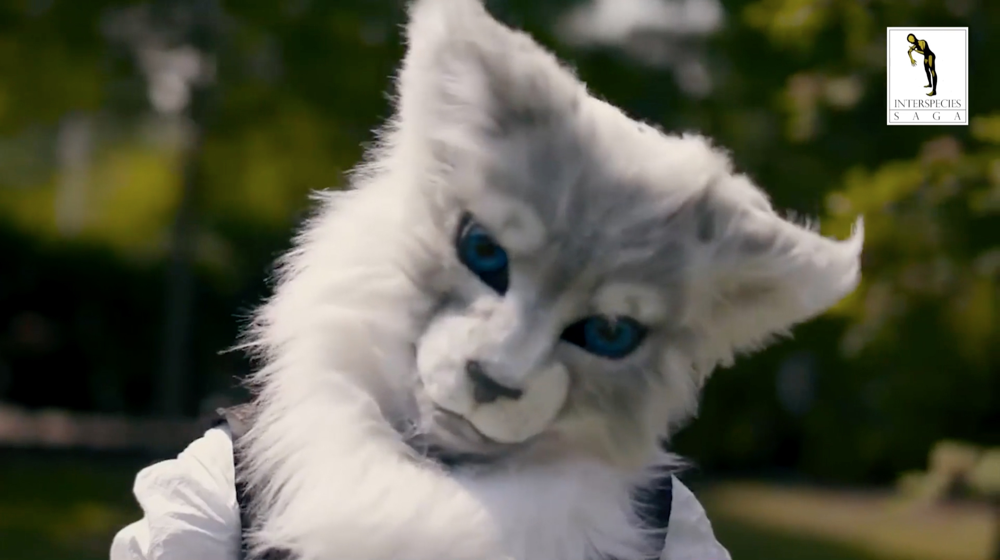
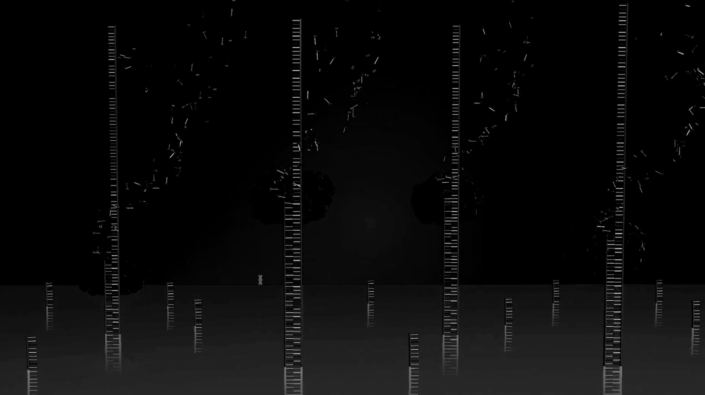

System: nature-culture landscapes
Agents: humans and animals
Environment: digital medias
Scale: -∞ to +∞
Design Tool: narrative
How can we know what nature is, if we interpret the natural world through the human narratives we project onto it? Through a tendency to anthropomorphize the world around us, humans have over-designed nature using story-telling and age-old narratives that have become deeply embedded in western culture. Interspecies Saga is a fictional documentary examining mythological human-animal relations. Extracting from historical, religious, psychological, and fandom perspectives, the found footage narrates how humans have found ways of internalizing and externalizing the natural world. The movie suggests the need for new subjective interpretations of what nature is, that break with ideological hierarchies that have mostly placed humans outside of or above nature.
Interspecies SAGA Documentary
15'52" found footage documentary examining mythological human-animal relations
System: nature-culture landscapes
Agents: humans and animals
Environment: digital medias
Scale: -∞ to +∞
Design Tool: narrative
How can we know what nature is, if we interpret the natural world through the human narratives we project onto it? Through a tendency to anthropomorphize the world around us, humans have over-designed nature using story-telling and age-old narratives that have become deeply embedded in western culture. Interspecies Saga is a fictional documentary examining mythological human-animal relations. Extracting from historical, religious, psychological, and fandom perspectives, the found footage narrates how humans have found ways of internalizing and externalizing the natural world. The movie suggests the need for new subjective interpretations of what nature is, that break with ideological hierarchies that have mostly placed humans outside of or above nature.
By: Pauline Rip, Maren Bang Tøndevold and Ramon Jimenez Cardenas
Mentored by: Michelle Kasprzak

System: data storage
Agents: DNA sequences
Environment: bank platform
Scale: -∞ to +∞
Design Tool: barcode
Recently, the global market for direct-to-consumer DNA testing kits, which can provide insights into ancestry and genetic health, has boomed. However, the businesses selling these services often harness customer data in exploitative ways. In the very near future it will be possible to fully sequence the genetic information of any living organism on a mass scale, but how will all this data be handled? This short video considers an alternative to a centralised DNA system by imagining the 001Bank. The design scenario of this future bank sees access to scientific knowledge as a right, whilst also providing individuals with increased autonomy over how their personal information is shared.
001 Bank
4'41" sketch on the future of genetic data storage
System: data storage
Agents: DNA sequences
Environment: bank platform
Scale: -∞ to +∞
Design Tool: barcode
Recently, the global market for direct-to-consumer DNA testing kits, which can provide insights into ancestry and genetic health, has boomed. However, the businesses selling these services often harness customer data in exploitative ways. In the very near future it will be possible to fully sequence the genetic information of any living organism on a mass scale, but how will all this data be handled? This short video considers an alternative to a centralised DNA system by imagining the 001Bank. The design scenario of this future bank sees access to scientific knowledge as a right, whilst also providing individuals with increased autonomy over how their personal information is shared.
By: Claire Matthews, Emma Schep and Hi Kyung Eun
Mentored by: Jesse Howard

The Observer and the Observed
2'45" animated found-footage of sea-worlds
System: cognitive visuality
Agents: microorganisms
Environment: underwater
Scale: -∞ to 0 cm
Design Tool: diving mask
The nature of identity categorisation conditions us to see “the other” in opposition to “ourselves”; as a result, separation and conflict arise, leading to mutual misunderstandings. With the aim of humbling human kind, the Mask invites its wearer to see the world from the perspective of a microorganism. The Mask aims to reverse the dominant logic and offer different ways of seeing. A series of tentacle-shaped sensors are attached to the Mask, which is equipped with night vision. Thanks to these, the microorganisms, either floating in the ocean or bound to marine creatures, can be seen with the help of bioluminescence. This short video is composed of a sequence of found footage, animated by newly drawn animations which simulate fluorescent submarine vision, so the human eye can see underwater. Thus, we are reminded that “tools” are the central players in shaping relationships between humans and nature.
By: Daatje Vera Noot, Tzuyen Chen and Paula Chang
Mentored by: Yvonne Droge Wendel